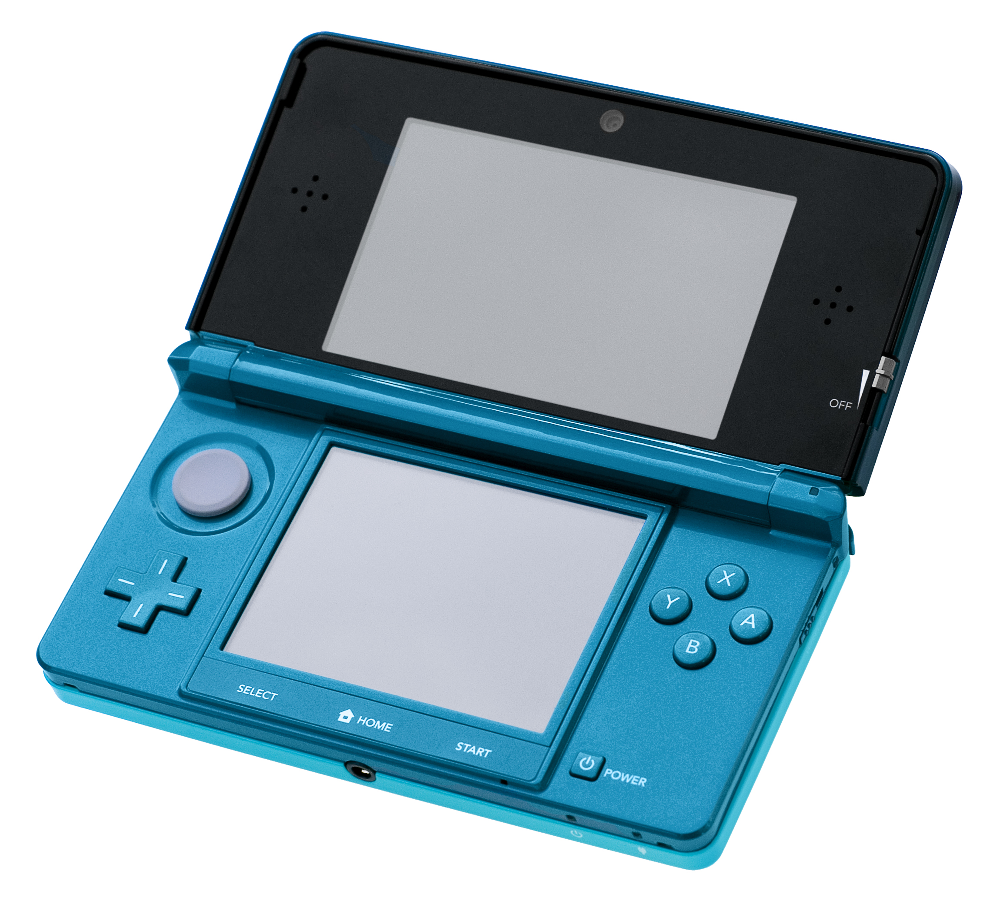
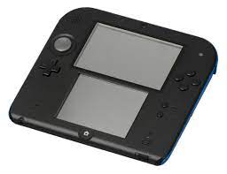
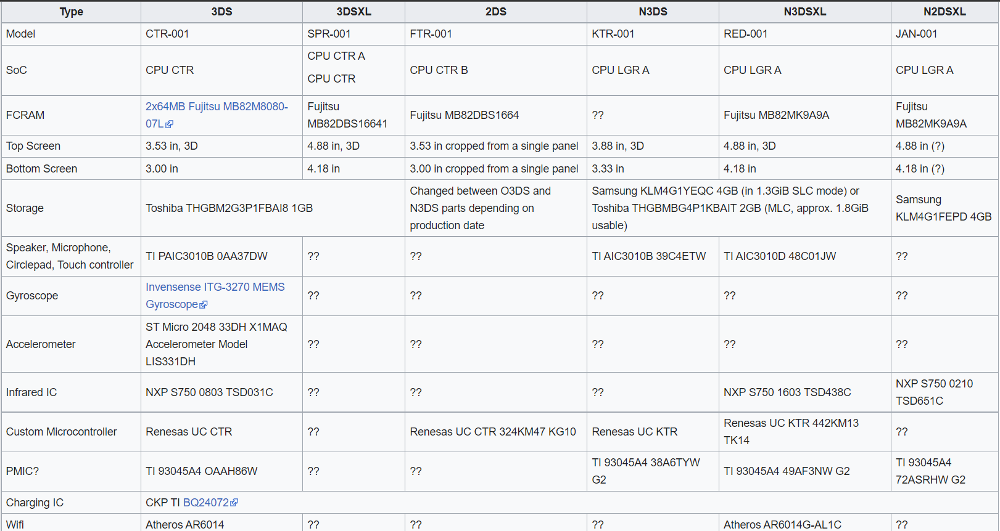
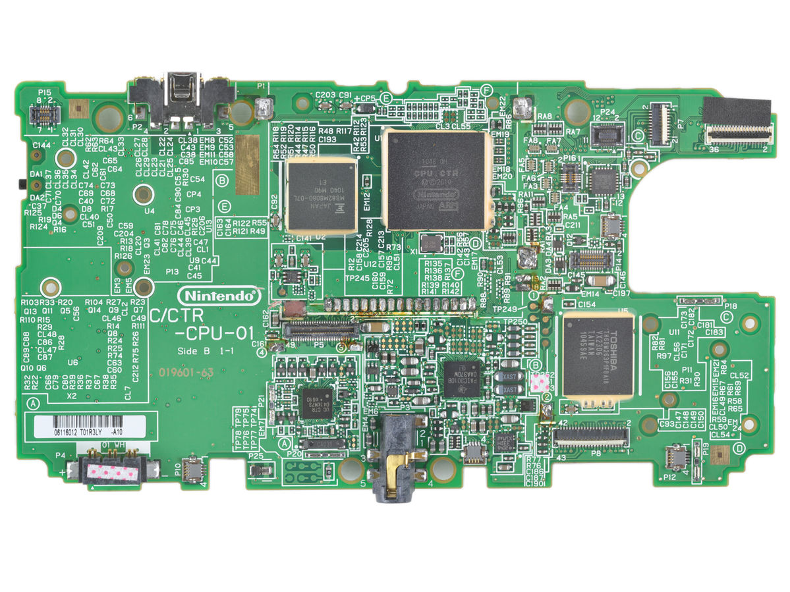

Home
Projects
Personal Blog
Tenor-Z's House
 Nintendo 3DS Development
Nintendo 3DS Development
The Nintendo 3DS was an infamous name in the video game handlheld meta, as it was known for its stunning 3D quality on a handheld system, a variety of good games, and having way too many variants. Seriously, there are way too many variants of this thing. Below from left to right are the older 3DS model and the 2DS model. Note the 2DS is meant to be a different console altogether.

When discussing different variants, their specs will be specified clearly, otherwise it should be considered general information. Obviously the Nintendo 3DS is a powerhouse compared to the DSi, having an ARM11 Processor running at 268mhz for the Old3DS (2x MPCore with a 2x VFPv2 Co-Processor) and 804mhz on the New3DS (4x MPCore and a 4x VFPv2 Co-Processor). It also contains a ARM9 Processor core running at 134mhz (ARM946 model). The GPU is a DMP PICA running at 268mhz with about 6 MB of VRAM. The DSP is a CEVA TeakLite running at 134mhz and usually gets modified during console homebrewing to enable sound for homebrew applications. On the newer 3DS models, the system can run at 804mhz on the Home Menu, and it also contains multiple clock rate multipliers available. Storage rates are 1 GB on the Old3DS, and although other specifications for newer models have not been found yet, you will definetly need an SD card if you are interested in homebrewing and potentially pimping your 3DS.

Special thanks to 3dbrew for documentating specifications and almost everything else in general.
Each model runs an operating system similar to the Wii's IOS, every title and application is represented as a square icon that can be activated with the tap on a screen or the push of a button. Something that should be of note is that the gyroscope does not work for Virtual Console games (This has been demonstrated with Warioware Twisted and Yoshi Topsy Turvy). There were no gyroscope-specific games released by Nintendo for the Eshop regardless. The system contains around 128 MB of RAM which is FCRAM (Fast Cycle RAM) by Fukitsu. The chip inside contains 2 dies, one being a CMOS FCRAM with an SDRAM Interface with 512MB storage in 64-bit format. Most of the internals are inside the system on chip. The SDIO controller supports SD cards up to 2.19 TB unlike Nintendo's statement to use SD cards up to 32 GB. It is only theoretical, and the highest amount tested is 128 GB.

The flash filesystem varies from each model. The total size for the Old3DS NAND is 0x3AF000000-bytes and 0x4D8000000-bytes for the New3DS. The 2DS and only one New3DS model and the Old3DS was manufactured by Toshiba, while the rest were manufacturered by Samsung. It is encrypted using AES-CTR. The TWL regions use the TWL NAND keyslot while CTR regions use the CTR NAND keyslots. The keyslot where data goes to is determined by the filesystem and encryption method. TWL/CTR regions are specified by the NCSD header alone. TWL NAND FAT partitions are named just "TWL", same with CTR "CTR". TWL offsets are stored in the MBR partition while the CTR partition information is stored on the NCSD header. The CTR partition stores savegames inside the /sysdata directory. Both the SD and NAND share the ID0 directory but it is stored on the NAND in cleartext. The movable.sed key is only used for AES MAC addresses for the ID0. The TWL parition however stays almost the same as the Dsi, since it holds the pratical emulator for DS games. Tickets are stored in the CTR FAT filesystem. Other than that, everything else is the same, except for /title only existing for DSiWare.
It should be kept in mind that 3DS homebrew solely exists because hackers were able to take advantage of the DS emulator by running buffer overflows, command execution, etc. With everything that is available, it is possible that programs can be made in DevKitPro's rendition of C. It is similar to programming in PowerPC for the Wii, except that the headers come with their own functions and such. Since the filesystem is open to these headers, it is also possible to create malware.
Tenor-Z's House
Nintendo 3DS Development